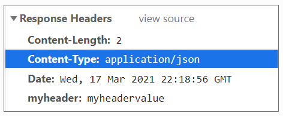
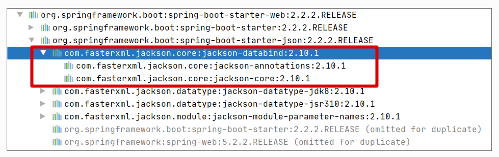
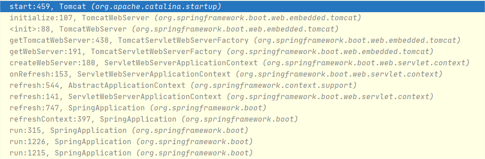
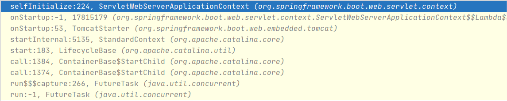
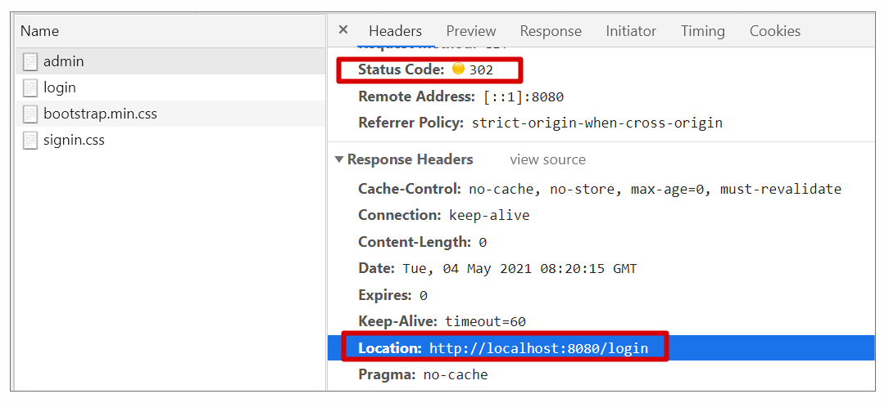

- 00 导读 5分钟轻松了解Spring基础知识.md.html
- 00 开篇词 贴心“保姆”Spring罢工了怎么办？.md.html
- 01 Spring Bean 定义常见错误.md.html
- 02 Spring Bean 依赖注入常见错误（上）.md.html
- 03 Spring Bean 依赖注入常见错误（下）.md.html
- 04 Spring Bean 生命周期常见错误.md.html
- 05 Spring AOP 常见错误（上）.md.html
- 06 Spring AOP 常见错误（下）.md.html
- 07 Spring事件常见错误.md.html
- 08 答疑现场：Spring Core 篇思考题合集.md.html
- 09 Spring Web URL 解析常见错误.md.html
- 10 Spring Web Header 解析常见错误.md.html
- 11 Spring Web Body 转化常见错误.md.html
- 12 Spring Web 参数验证常见错误.md.html
- 13 Spring Web 过滤器使用常见错误（上）.md.html
- 14 Spring Web 过滤器使用常见错误（下）.md.html
- 15 Spring Security 常见错误.md.html
- 16 Spring Exception 常见错误.md.html
- 17 答疑现场：Spring Web 篇思考题合集.md.html
- 18 Spring Data 常见错误.md.html
- 19 Spring 事务常见错误（上）.md.html
- 20 Spring 事务常见错误（下）.md.html
- 21 Spring Rest Template 常见错误.md.html
- 22 Spring Test 常见错误.md.html
- 23 答疑现场：Spring 补充篇思考题合集.md.html
- 导读 5分钟轻松了解一个HTTP请求的处理过程.md.html
- 知识回顾 系统梳理Spring编程错误根源.md.html
- 结束语 问题总比解决办法多.md.html
- 捐赠
17 答疑现场：Spring Web 篇思考题合集
你好，我是傅健。
欢迎来到第二次答疑现场，恭喜你，已经完成了三分之二的课程。到今天为止，我们已经解决了 38 个线上问题，不知道你在工作中有所应用了吗？老话说得好，“纸上得来终觉浅，绝知此事要躬行”。希望你能用行动把知识从“我的”变成“你的”。
闲话少叙，接下来我就开始逐一解答第二章的课后思考题了，有任何想法欢迎到留言区补充。
第9课
关于 URL 解析，其实还有许多让我们惊讶的地方，例如案例 2 的部分代码：
@RequestMapping(path = "/hi2", method = RequestMethod.GET)
public String hi2(@RequestParam("name") String name){
return name;
};
在上述代码的应用中，我们可以使用 http://localhost:8080/hi2?name=xiaoming&name=hanmeimei 来测试下，结果会返回什么呢？你猜会是 xiaoming&name=hanmeimei 么？
针对这个测试，返回的结果其实是”xiaoming,hanmeimei”。这里我们可以追溯到请求参数的解析代码，参考 org.apache.tomcat.util.http.Parameters#addParameter：
public void addParameter( String key, String value )
throws IllegalStateException {
//省略其他非关键代码
ArrayList<String> values = paramHashValues.get(key);
if (values == null) {
values = new ArrayList<>(1);
paramHashValues.put(key, values);
}
values.add(value);
}
可以看出当使用 name=xiaoming&name=hanmeimei 这种形式访问时，name 解析出的参数值是一个 ArrayList 集合，它包含了所有的值（此处为xiaoming和hanmeimei）。但是这个数组在最终是需要转化给我们的 String 类型的。转化执行可参考其对应转化器 ArrayToStringConverter 所做的转化，关键代码如下：
public Object convert(@Nullable Object source, TypeDescriptor sourceType, TypeDescriptor targetType) {
return this.helperConverter.convert(Arrays.asList(ObjectUtils.toObjectArray(source)), sourceType, targetType);
}
其中 helperConverter 为 CollectionToStringConverter，它使用了 “,” 作为分隔将集合转化为 String 类型，分隔符定义如下：
private static final String DELIMITER = ",";
通过上述分析可知，对于参数解析，解析出的结果其实是一个数组，只是在最终转化时，可能因不同需求转化为不同的类型，从而呈现出不同的值，有时候反倒让我们很惊讶。分析了这么多，我们可以改下代码，测试下刚才的源码解析出的一些结论，代码修改如下：
@RequestMapping(path = "/hi2", method = RequestMethod.GET)
public String hi2(@RequestParam("name") String[] name){
return Arrays.toString(name);
};
这里我们将接收类型改为 String 数组，然后我们重新测试，会发现结果为 [xiaoming, hanmeimei]，这就更好理解和接受了。
第10课
在案例 3 中，我们以 Content-Type 为例，提到在 Controller 层中随意自定义常用头有时候会失效。那么这个结论是不是普适呢？即在使用其他内置容器或者在其他开发框架下，是不是也会存在一样的问题？
实际上，答案是否定的。这里我们不妨修改下案例 3 的 pom.xml。修改的目标是让其不要使用默认的内嵌 Tomcat 容器，而是 Jetty 容器。具体修改示例如下：
<dependency>
<groupId>org.springframework.boot</groupId>
<artifactId>spring-boot-starter-web</artifactId>
<exclusions>
<exclusion>
<groupId>org.springframework.boot</groupId>
<artifactId>spring-boot-starter-tomcat</artifactId>
</exclusion>
</exclusions>
</dependency>
<!-- 使用 Jetty -->
<dependency>
<groupId>org.springframework.boot</groupId>
<artifactId>spring-boot-starter-jetty</artifactId>
</dependency>
经过上面的修改后，我们再次运行测试程序，我们会发现 Content-Type 确实可以设置成我们想要的样子，具体如下：

同样是执行 addHeader()，但是因为置换了容器，所以调用的方法实际是 Jetty 的方法，具体参考 org.eclipse.jetty.server.Response#addHeader：
public void addHeader(String name, String value)
{
//省略其他非关键代码
if (HttpHeader.CONTENT_TYPE.is(name))
{
setContentType(value);
return;
}
//省略其他非关键代码
_fields.add(name, value);
}
在上述代码中，setContentType() 最终是完成了 Header 的添加。这点和 Tomcat 完全不同。具体可参考其实现：
public void setContentType(String contentType)
{
//省略其他非关键代码
if (HttpGenerator.__STRICT || _mimeType == null)
//添加CONTENT_TYPE
_fields.put(HttpHeader.CONTENT_TYPE, _contentType);
else
{
_contentType = _mimeType.asString();
_fields.put(_mimeType.getContentTypeField());
}
}
}
再次对照案例 3 给出的部分代码，在这里，直接贴出关键一段（具体参考 AbstractMessageConverterMethodProcessor#writeWithMessageConverters）：
MediaType selectedMediaType = null;
MediaType contentType = outputMessage.getHeaders().getContentType();
boolean isContentTypePreset = contentType != null && contentType.isConcrete();
if (isContentTypePreset) {
selectedMediaType = contentType;
} else {
//根据请求 Accept 头和注解指定的返回类型（RequestMapping#produces）协商用何种 MediaType.
}
//省略其他代码：else
从上述代码可以看出，最终选择的 MediaType 已经不需要协商了，这是因为在Jetty容器中，Header 里面添加进了contentType，所以可以拿出来直接使用。而之前介绍的Tomcat容器没有把contentType添加进Header里，所以在上述代码中，它不能走入isContentTypePreset 为 true 的分支。此时，它只能根据请求 Accept 头和注解指定的返回类型等信息协商用何种 MediaType。
追根溯源，主要在于不同的容器对于 addHeader() 的实现不同。这里我们不妨再深入探讨下。首先，回顾我们案例 3 代码中的方法定义：
import javax.servlet.http.HttpServletResponse;
public String hi3(HttpServletResponse httpServletResponse)
虽然都是接口 HttpServletResponse，但是在 Jetty 容器下，会被装配成 org.eclipse.jetty.server.Response，而在 Tomcat 容器下，会被装配成 org.apache.catalina.connector.Response。所以调用的方法才会发生不同。
如何理解这个现象？容器是通信层，而 Spring Boot 在这其中只是中转，所以在 Spring Boot 中，HTTP Servlet Response 来源于最原始的通信层提供的对象，这样也就合理了。
通过这个思考题，我们可以看出：对于很多技术的使用，一些结论并不是一成不变的。可能只是换下容器，结论就会失效。所以，只有洞悉其原理，才能从根本上避免各种各样的麻烦，而不仅仅是凭借一些结论去“刻舟求剑”。
第11课
通过案例 1 的学习，我们知道直接基于 Spring MVC 而非 Spring Boot 时，是需要我们手工添加 JSON 依赖，才能解析出 JSON 的请求或者编码 JSON 响应，那么为什么基于 Spring Boot 就不需要这样做了呢？
实际上，当我们使用 Spring Boot 时，我们都会添加相关依赖项：
<dependencies>
<dependency>
<groupId>org.springframework.boot</groupId>
<artifactId>spring-boot-starter-web</artifactId>
</dependency>
</dependencies>
而这个依赖项会间接把 Jackson 添加进去，依赖关系参考下图：

后续 Jackson 编解码器的添加，和普通 Spring MVC 关键逻辑相同：都是判断相关类是否存在。不过这里可以稍微总结下，判断相关类是否存在有两种风格：
- 直接使用反射来判断
例如前文介绍的关键语句：
ClassUtils.isPresent(“com.fasterxml.jackson.databind.ObjectMapper”, null)
- 使用 @ConditionalOnClass 参考 JacksonHttpMessageConvertersConfiguration 的实现：
package org.springframework.boot.autoconfigure.http;
@Configuration(proxyBeanMethods = false)
class JacksonHttpMessageConvertersConfiguration {
@Configuration(proxyBeanMethods = false)
@ConditionalOnClass(ObjectMapper.class)
@ConditionalOnBean(ObjectMapper.class)
@ConditionalOnProperty(name = HttpMessageConvertersAutoConfiguration.PREFERRED_MAPPER_PROPERTY,
havingValue = "jackson", matchIfMissing = true)
static class MappingJackson2HttpMessageConverterConfiguration {
@Bean
@ConditionalOnMissingBean(value = MappingJackson2HttpMessageConverter.class）
//省略部分非关键代码
MappingJackson2HttpMessageConverter mappingJackson2HttpMessageConverter(ObjectMapper objectMapper) {
return new MappingJackson2HttpMessageConverter(objectMapper);
}
}
以上即为判断某个类是否存在的两种方法。
第12课
在上面的学籍管理系统中，我们还存在一个接口，负责根据学生的学号删除他的信息，代码如下：
@RequestMapping(path = "students/{id}", method = RequestMethod.DELETE)
public void deleteStudent(@PathVariable("id") @Range(min = 1,max = 10000) String id){
log.info("delete student: {}",id);
//省略业务代码
};
这个学生的编号是从请求的Path中获取的，而且它做了范围约束，必须在1到10000之间。那么你能找出负责解出 ID 的解析器（HandlerMethodArgumentResolver）是哪一种吗？校验又是如何触发的？
按照案例1的案例解析思路，我们可以轻松地找到负责解析ID值的解析器是PathVariableMethodArgumentResolver，它的匹配要求参考如下代码：
@Override
public boolean supportsParameter(MethodParameter parameter) {
if (!parameter.hasParameterAnnotation(PathVariable.class)) {
return false;
}
if (Map.class.isAssignableFrom(parameter.nestedIfOptional().getNestedParameterType())) {
PathVariable pathVariable = parameter.getParameterAnnotation(PathVariable.class);
return (pathVariable != null && StringUtils.hasText(pathVariable.value()));
}
//要返回true，必须标记@PathVariable注解
return true;
}
查看上述代码，当String类型的方法参数ID标记@PathVariable时，它就能符合上PathVariableMethodArgumentResolver的匹配条件。
翻阅这个解析类的实现，我们很快就可以定位到具体的解析方法，但是当我们顺藤摸瓜去找Validation时，却无蛛丝马迹，这点完全不同于案例1中的解析器RequestResponseBodyMethodProcessor。那么它的校验到底是怎么触发的？你可以把这个问题当做课后作业去思考下，这里仅仅给出一个提示，实际上，对于这种直接标记在方法参数上的校验是通过AOP拦截来做校验的。
第13课
在案例2中，我们提到一定要避免在过滤器中调用多次FilterChain#doFilter()。那么假设一个过滤器因为疏忽，在某种情况下，这个方法一次也没有调用，会出现什么情况呢？
这样的过滤器可参考改造后的DemoFilter：
@Component
public class DemoFilter implements Filter {
public void doFilter(ServletRequest request, ServletResponse response, FilterChain chain) throws IOException, ServletException {
System.out.println("do some logic");
}
}
对于这样的情况，如果不了解Filter的实现逻辑，我们可能觉得，它最终会执行到Controller层的业务逻辑，最多是忽略掉排序在这个过滤器之后的一些过滤器而已。但是实际上，结果要严重得多。
以我们的改造案例为例，我们执行HTTP请求添加用户返回是成功的：
POST http://localhost:8080/regStudent/fujian-
HTTP/1.1 200- Content-Length: 0- Date: Tue, 13 Apr 2021 11:37:43 GMT- Keep-Alive: timeout=60- Connection: keep-alive
但是实际上，我们的Controller层压根没有执行。这里给你解释下原因，还是贴出之前解析过的过滤器执行关键代码（ApplicationFilterChain#internalDoFilter）：
private void internalDoFilter(ServletRequest request,
ServletResponse response){
if (pos < n) {
// pos会递增
ApplicationFilterConfig filterConfig = filters[pos++];
try {
Filter filter = filterConfig.getFilter();
// 省略非关键代码
// 执行filter
filter.doFilter(request, response, this);
// 省略非关键代码
}
// 省略非关键代码
return;
}
// 执行真正实际业务
servlet.service(request, response);
}
// 省略非关键代码
}
当我们的过滤器DemoFilter被执行，而它没有在其内部调用FilterChain#doFilter时，我们会执行到上述代码中的return语句。这不仅导致后续过滤器执行不到，也会导致能执行业务的servlet.service(request, response)执行不了。此时，我们的Controller层逻辑并未执行就不稀奇了。
相反，正是因为每个过滤器都显式调用了FilterChain#doFilter，才有机会让最后一个过滤器在调用FilterChain#doFilter时，能看到 pos = n 这种情况。而这种情况下，return就走不到了，能走到的是业务逻辑（servlet.service(request, response)）。
第14课
这节课的两个案例，它们都是在Tomcat容器启动时发生的，但你了解Spring是如何整合Tomcat，使其在启动时注册这些过滤器吗？
当我们调用下述关键代码行启动Spring时：
SpringApplication.run(Application.class, args);
会创建一个具体的 ApplicationContext 实现，以ServletWebServerApplicationContext为例，它会调用onRefresh()来与Tomcat或Jetty等容器集成：
@Override
protected void onRefresh() {
super.onRefresh();
try {
createWebServer();
}
catch (Throwable ex) {
throw new ApplicationContextException("Unable to start web server", ex);
}
}
查看上述代码中的createWebServer()实现：
private void createWebServer() {
WebServer webServer = this.webServer;
ServletContext servletContext = getServletContext();
if (webServer == null && servletContext == null) {
ServletWebServerFactory factory = getWebServerFactory();
this.webServer = factory.getWebServer(getSelfInitializer());
}
// 省略非关键代码
}
第6行，执行factory.getWebServer()会启动Tomcat，其中这个方法调用传递了参数getSelfInitializer()，它返回的是一个特殊格式回调方法this::selfInitialize用来添加Filter等，它是当Tomcat启动后才调用的。
private void selfInitialize(ServletContext servletContext) throws ServletException {
prepareWebApplicationContext(servletContext);
registerApplicationScope(servletContext);
WebApplicationContextUtils.registerEnvironmentBeans(getBeanFactory(), servletContext);
for (ServletContextInitializer beans : getServletContextInitializerBeans()) {
beans.onStartup(servletContext);
}
}
那说了这么多，你可能对这个过程还不够清楚，这里我额外贴出了两段调用栈帮助你理解。
- 启动Spring Boot时，启动Tomcat：

- Tomcat启动后回调selfInitialize：

相信通过上述调用栈，你能更清晰地理解Tomcat启动和Filter添加的时机了。
第15课
通过案例 1 的学习，我们知道在 Spring Boot 开启 Spring Security 时，访问需要授权的 API 会自动跳转到如下登录页面，你知道这个页面是如何产生的么？

实际上，在 Spring Boot 启用 Spring Security 后，匿名访问一个需要授权的 API 接口时，我们会发现这个接口授权会失败，从而进行 302 跳转，跳转的关键代码可参考 ExceptionTranslationFilter 调用的 LoginUrlAuthenticationEntryPoint#commence 方法：
public void commence(HttpServletRequest request, HttpServletResponse response,
AuthenticationException authException) throws IOException, ServletException {
//省略非关键代码
redirectUrl = buildRedirectUrlToLoginPage(request, response, authException);
//省略非关键代码
redirectStrategy.sendRedirect(request, response, redirectUrl);
}
具体的跳转情况可参考 Chrome 的开发工具：

在跳转后，新的请求最终看到的效果图是由下面的代码生产的 HTML 页面，参考 DefaultLoginPageGeneratingFilter#generateLoginPageHtml：
private String generateLoginPageHtml(HttpServletRequest request, boolean loginError,
boolean logoutSuccess) {
String errorMsg = "Invalid credentials";
//省略部分非关键代码
StringBuilder sb = new StringBuilder();
sb.append("<!DOCTYPE html>\n"
+ "<html lang=\"en\">\n"
+ " <head>\n"
+ " <meta charset=\"utf-8\">\n"
+ " <meta name=\"viewport\" content=\"width=device-width, initial-scale=1, shrink-to-fit=no\">\n"
+ " <meta name=\"description\" content=\"\">\n"
+ " <meta name=\"author\" content=\"\">\n"
+ " <title>Please sign in</title>\n"
+ " <link href=\"https://maxcdn.bootstrapcdn.com/bootstrap/4.0.0-beta/css/bootstrap.min.css\" rel=\"stylesheet\" integrity=\"sha384-/Y6pD6FV/Vv2HJnA6t+vslU6fwYXjCFtcEpHbNJ0lyAFsXTsjBbfaDjzALeQsN6M\" crossorigin=\"anonymous\">\n"
+ " <link href=\"https://getbootstrap.com/docs/4.0/examples/signin/signin.css\" rel=\"stylesheet\" crossorigin=\"anonymous\"/>\n"
+ " </head>\n"
+ " <body>\n"
+ " <div class=\"container\">\n");
//省略部分非关键代码
sb.append("</div>\n");
sb.append("</body></html>");
return sb.toString();
}
上即为登录页面的呈现过程，可以看出基本都是由各种 Filter 来完成的。
第16课
这节课的两个案例，在第一次发送请求的时候，会遍历对应的资源处理器和异常处理器，并注册到 DispatcherServlet 对应的类成员变量中，你知道它是如何被触发的吗？
实现了 FrameworkServlet 的 onRefresh() 接口，这个接口会在WebApplicationContext初始化时被回调：
public class DispatcherServlet extends FrameworkServlet {
@Override
protected void onRefresh(ApplicationContext context) {
initStrategies(context);
}
/**
* Initialize the strategy objects that this servlet uses.
* <p>May be overridden in subclasses in order to initialize further strategy objects.
*/
protected void initStrategies(ApplicationContext context) {
initMultipartResolver(context);
initLocaleResolver(context);
initThemeResolver(context);
initHandlerMappings(context);
initHandlerAdapters(context);
initHandlerExceptionResolvers(context);
initRequestToViewNameTranslator(context);
initViewResolvers(context);
initFlashMapManager(context);
}
}
以上就是这次答疑的全部内容，我们下一章节再见！
© 2019 - 2023 Liangliang Lee. Powered by gin and hexo-theme-book.